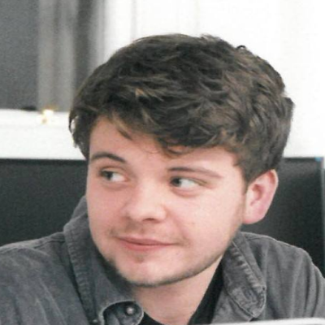

Robert Pezet - Graphic Designer
As Robert didn't actually officially work for Wizard Web Development but worked closely with the company by making graphics for Martin (who is his brother). Martin started employing his brothers services in the June of 2012 to start making more professional graphics and provide a better service for the customers. He finished his service to the company in early 2016.
Robert went to Sheffield Hallum and got a Masters in Design which gave him the necessary skills to provide brilliant graphics for the company.
Joshua Gunton - Graphic Designer
Joshua Gunton started at Wizard Web Development in June 2016 after Robert Pezet had left Josh Gunton took up the mantle of graphic designer for the company which he fulfilled to a good standard but after a year and a half he had to move on after family issues had to make him move away from the company which meant he had to resign (was brutally fired).
Josh gained experience at a small consultancy in London where he learnt many nessesary skills to provide sufficent graphics for the on going projects that the company was carrying out.